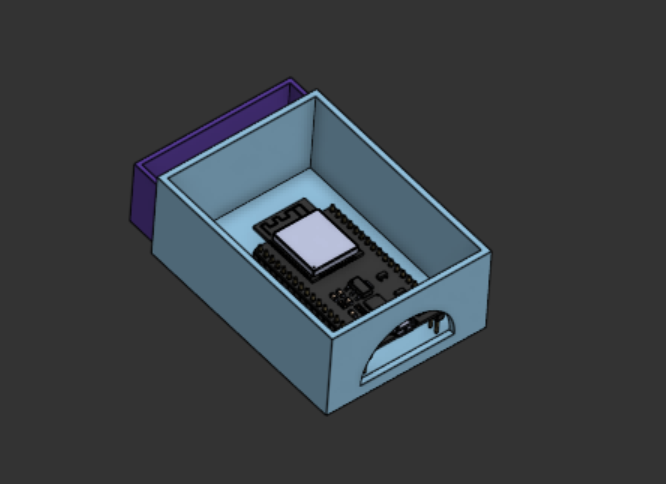

Hardware Gait Analyzer (Personal Project)
A proof-of-concept low-cost gait analysis tool. Using a pair of wireless sensor modules placed under the L4 vertebra and on either the left or right thigh to measure basic hip flexion and extension movements. The project provides the possibility for a completely modular and portable gait analyzer, usable in any environment, completely wireless and requiring just a computer to analyse results.

Sensor Module

Initial Cad Design